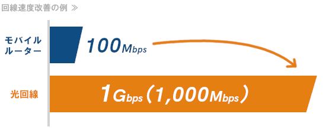

|
動画がすぐ止まる
良いところで何回も何回も…！
悩み１ 急に止まって動かない
休日に家でゆっくり動画を見たい。YoutubeやAmazonプライム、NETFLIXなど、見たい動画は尽きない…！
しかし、動画をしばらく見た時にこの悲劇…。
悩み２ 肝心なところで何回も止まる
楽しみにしていた動画も、これで台無し。イライラして動画の内容に集中できない。安心して動画を見る方法ってないのかな…？
そのお悩み、解決できます！
光回線を使うことで

安定したインターネットが楽しめます。 解決方法 安定を求めるなら光回線
携帯の電波は、エリアや天候・建物の構造により影響を受けます。例えば、都会から田舎に行ったり、
同じエリアで電波利用が集中したりすると、電波が悪くなることがあります。
光回線を利用して、おウチの中にWi-Fiを飛ばすことで、安定したインターネット環境を作ることができます。 光回線は、エリアや天候・建物の構造による影響はほとんどありません。 |
|